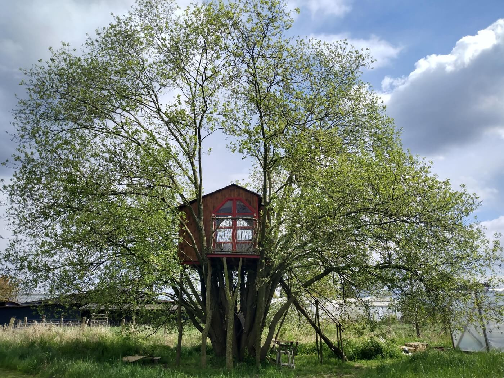

Types of Treehouses
When building a treehouse, the first thing you will
need is a suitable tree, what you want to use the treehouse for(eg. children's playhouse) The size and type
of treehouse you want to build
will depend on how big the tree is.You will want to consider the scope.
The Floor
The simplest kind of treehouse is one with simply a floor. If your treehouse
is higher than about 2m, it will need a railing.

The Stairs
adding a stairwell will add some work, but will make it much more
easier to use the treehouse in the long run. If you have to climb up and down each time
you want to use it, it will make you less likely to want to use it. If you are planning to build
a roof, this should be done first, so that you can get up and down easily when building the roof.
The Walls and Roof
If you want to use your treehouse as a place for guests to sleep for example, then
you will need a roof, walls, doors. Windows will add a lot of work, but are worthwhile, since
the advantage of being in a treehouse is the view. You can make part of the treehouse a balcony, which
means you want need to cover the whole floor area.